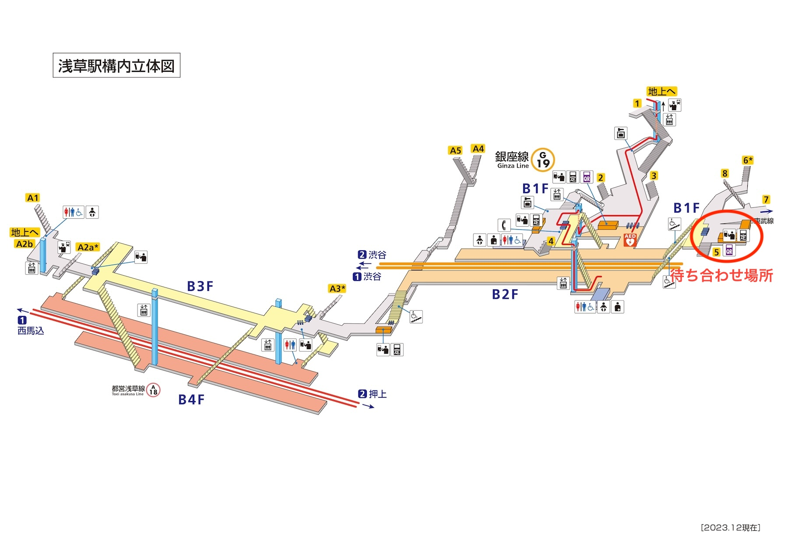
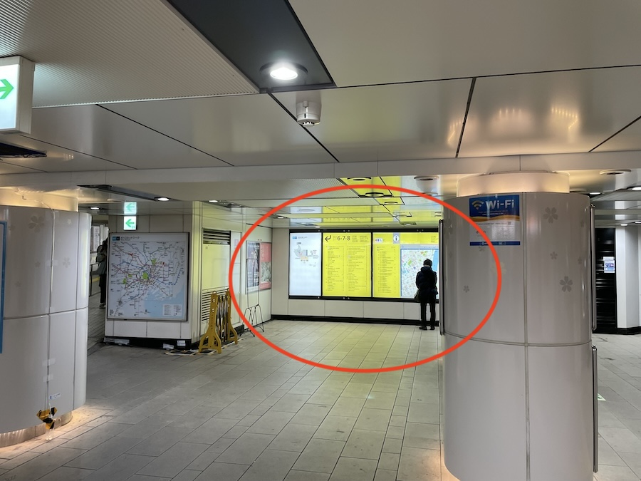
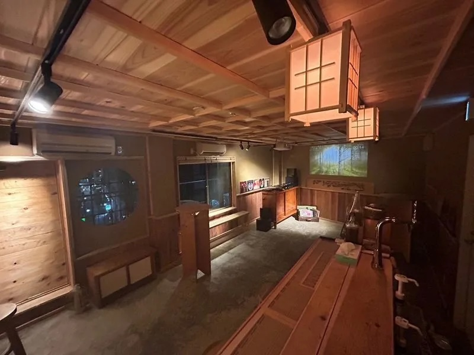
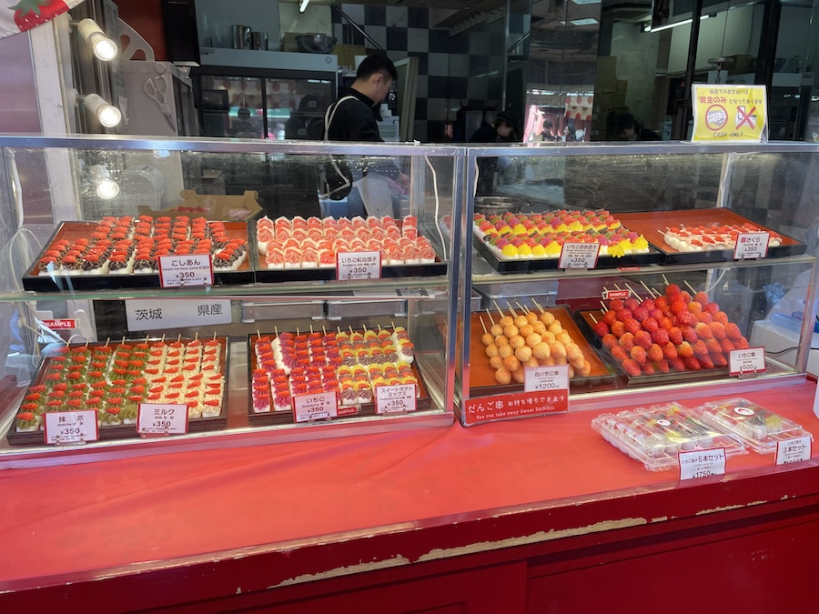
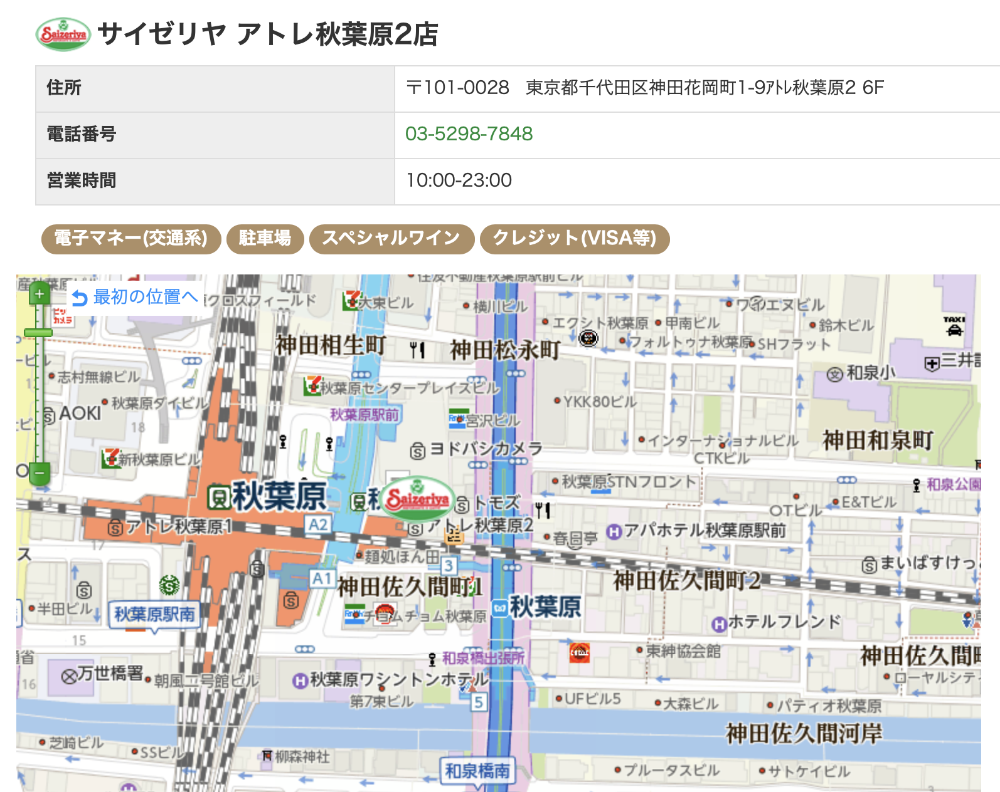

お待たせしてしまい申し訳ございません。
3/24開催のミルモオフ会で予定している内容をまとめてみました（一部、変更になる可能性があります）
こういった企画に不慣れな私ですので、「こうするといいかも！」といった提案はあれば大歓迎です〜。
なおこの内容は参加者限りでお願いしますね(^^;
更新履歴
2024/3/13 初出
2024/3/17 参加者を掲載
2024/3/19 参加者にかなたさんを追加
2024/3/20 集合場所とオフ会の流れを詳細化
2024/3/23 当日の持ち物を追記
オフ会の詳細
- 参加者（五十音順）
MC119さん
アマデウスさん（夕食＠サイゼリヤから参加）
かなたさん ※3/19追加
しらはまさん
セナモスさん
夏田みかんさん
はやぶささん
フクフェイさん
こやまる - 集合時間・集合場所
3/24 15:00に 東京メトロ銀座線 浅草駅の５番出口付近にて集合
（浅草方面に向かう銀座線の先頭車両に乗ると５番出口に近いです）
↑赤丸で囲った付近で待ち合わせ
- 参加費
2,000円（夕食での飲食は別にかかります） - 当日の持ち物（必須ではないです）
お絵描きセット（筆記用具、スケッチブックなど）
ぬいぐるみ（ぬいぐるみ記念撮影用。ミルモ関連ではなくてもOK。10〜20cmくらいだとベター）
お菓子・飲み物など - オフ会の流れ
15:00 集合
15:15〜 レンタルスペースにてミルモ関連のクイズ大会、アニメ鑑賞会、お絵描き大会など
レンタルスペースはRelax one 浅草で、ちょっと怪しげな雰囲気だったりします(^◇^;)
飲食OKですので、当日のお菓子の持ち込みは大歓迎です♪
（ゴミは持ち帰りになります）
退出時は椅子の位置などを元に戻す必要があるので、ご協力お願いします。
17:15〜 浅草で食べ歩き、ぬいぐるみ写真撮影会
写真撮影は雷門・・はちょっと難易度高い？？
食べ歩きはどこかいいところあるかな？
メロンパンとかいちご飴とかメンチカツとか餅ドッグとか・・（メンチカツはいつも大行列のようです）
以下は参考です。
【困ったらココ】浅草で食べ歩き 人気店20選
【最新】浅草の食べ歩きグルメおすすめ25選！インスタで人気のスイーツや営業時間も紹介
↑参考画像
18:15〜 TX浅草駅からTX秋葉原駅へ移動
18:30〜 TX秋葉原駅近くのサイゼリヤ秋葉原アトレ２店で夕食会

20:30頃 解散
(2024/3/13)